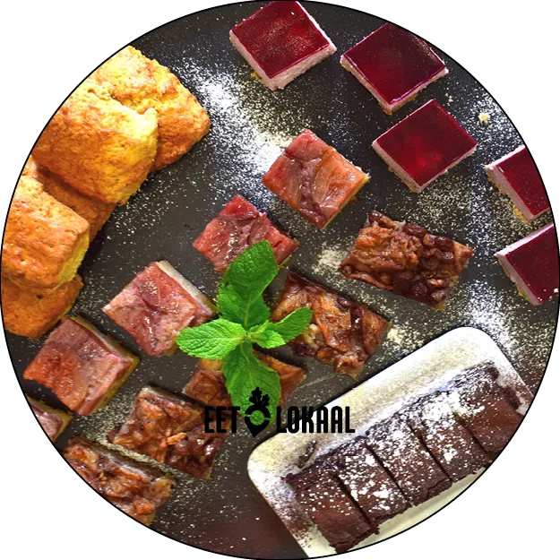

High tea
€ 32,50 p.p.Een ongedwongen middag met een uitgebreide, lokale high tea in 3 gangen. Bij uitstek geschikt voor een babyshower of een middag met vriendinnen.
- Warm hartig item
- Diverse belegde sandwiches en buffelyoghurt
- Zoete afsluiting met verschillende taartjes en scones met beleg
Inclusief onbeperkt thee uit de theedoos en (gewone) koffie. Upgrade voor € 7,50 p.p.: onbeperkt gember- en muntthee, latte macchiato, cappuccino en frisdranken.
Binnenkomst tussen 12:00 en 14:00 uur, uiterlijke eindtijd 16:30 uur. Niet glutenvrij, lactosevrij of veganistisch mogelijk; daarvoor stellen we graag een 3-gangen lunch samen. Flyer babyshower (pdf)